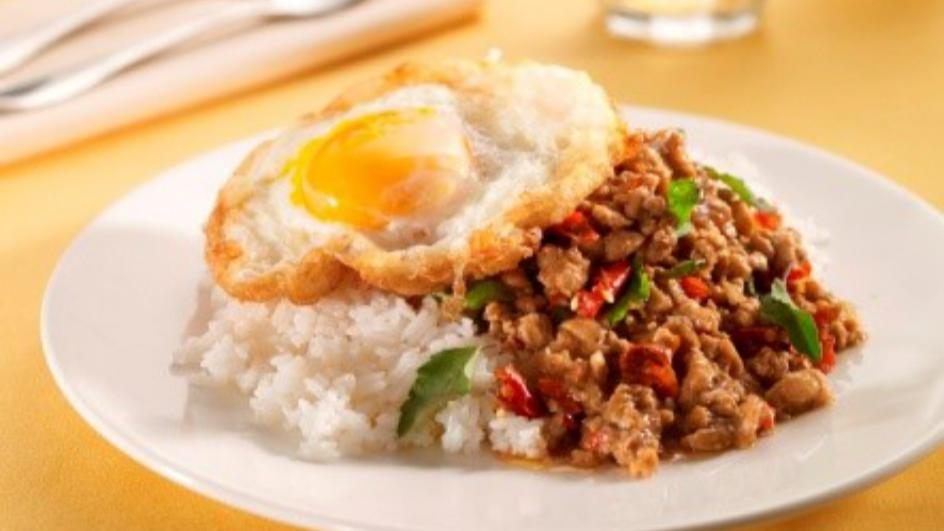

Stirfry basil chicken (กระเพราไก่)

Description:
Thai basil chicken is a stir-fry dish made with finely chopped or ground chicken cooked with chile peppers, garlic, and shallots, and seasoned with a sweet and salty sauce and finished with fresh basil. It's a classic dish in Thai cuisine and can be found in restaurants and as a popular street food.
Ingredients:
- 5 cloves garlic
- 2 chilli
- Soy sauce
- 1 pack of chicken
- Basil
- Oyster sauce
- Sugar
- Onion
Steps:
- Use mortal and pestle to smash chilli and garlic
- Heat a pan, throw garlic mixture in
- Add chicken, soysauce.
- Add onion, oyster sauce, onion, sugar, and basil.